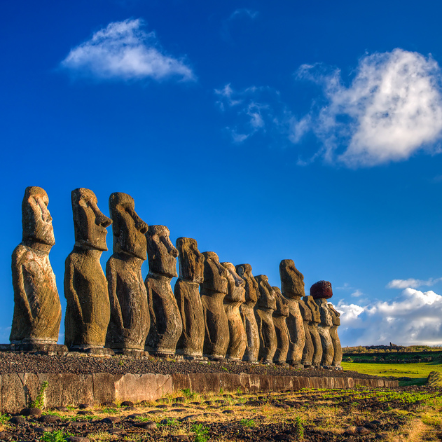
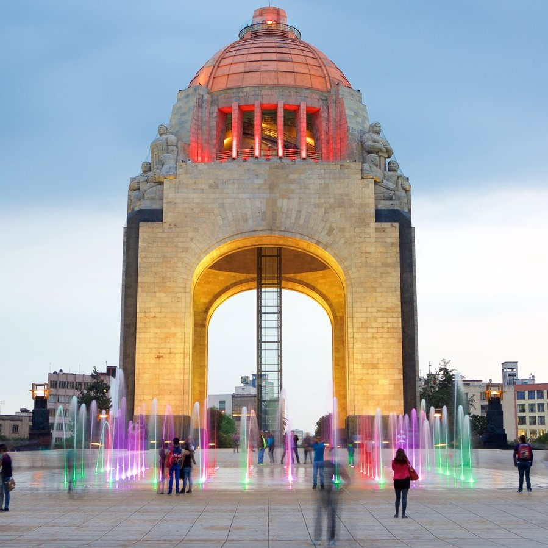

-
 Río de JaneiroUS$ 475.79Brasil
Río de JaneiroUS$ 475.79BrasilVisit all the must-see attractions of Rio de Janeiro in a day: Christ The Redeemer Statue, Sugarloaf Mountain, Selarón Steps, Maracanã Stadium, Sambadrome, Metropolitan Cathedral, and lunch at Brazilian steakhouse. Includes roundtrip transportation.
-
SantiagoUS$ 354.65Chile
Visit all the must-see attractions of Rio de Janeiro in a day: Christ The Redeemer Statue, Sugarloaf Mountain, Selarón Steps, Maracanã Stadium, Sambadrome, Metropolitan Cathedral, and lunch at Brazilian steakhouse. Includes roundtrip transportation.
-
 La HabanaUS$ 470.45Cuba
La HabanaUS$ 470.45CubaSee why UNESCO made Old Havana a World Heritage site on this walking tour that takes in all the glorious grandeur of the decayed yet dynamic Old Havana area.
-
 QuitoUS$ 490.45Ecuador
QuitoUS$ 490.45EcuadorUse your Quito City Bus Tour ticket throughout the day to enjoy the historic sites from the top of a double-decker bus. Hop off to explore South America’s largest city center and hop back on to continue along the sightseeing route.
-
Ciudad de MéxicoUS$ 590.45México
Enter the heart of Mexico to see the majestic site of Teotihuacan, and climb the Pyramid of the Sun and the Moon. Have the opportunity to learn all about the Basilica of Guadalupe and the Mantle of Juan Diego.
-
 Nueva YorkUS$ 540.45Estados Unidos
Nueva YorkUS$ 540.45Estados UnidosSkip the line to buy your ticket and ascend to the 86th floor for incredible panoramic views over New York from the highest open-air observatory in New York. This flexible date ticket allows you to plan your visit around the weather.